Atelier Lausanne - 20 mars 2025
Commençons …
Que faisons-nous aujourd’hui ?
Lucie Nicolier et Damiano Lombardi
Qui êtes-vous ?
- D’où viens-je ?
- Quel est mon travail principal ?
- Je suis Model Baker … :
- A. … Zéro: Qu’est-ce que Model Baker ?
- B. … Utilisateur: Ai-je déjà créé des projets ?
- C. … Héros: Ai-je déjà travaillé avec des conteneurs / validation, etc. ?
Objectifs de l’atelier
- Représenter des modèles INTERLIS dans la base de données et importer / exporter / valider des données
- Être capable de travailler avec des conteneurs et des OID dans QGIS
- Savoir ce que sont les méta-attributs et les stratégies d’héritage, etc.
Programme (1)
| Temps | Contenu |
|---|---|
| 09.00 | Introduction et environnement 🧑🏫 |
| 10.00 | Importation de modèles 👪 |
| 10.30 | Méta-attributs 🧑🏫 💻 |
| 11.00 | Pause |
| 11.15 | Héritages et cartographie 🧑🏫 💻 |
| 12.00 | Dîner |
Programme (2)
| Temps | Contenu |
|---|---|
| 13.00 | Importation et exportation de données 👪 Conteneurs et ensembles de données 🧑🏫 💻 |
| 13.45 | Saisie et validation 👪 💻 |
| 15.15 | Pause |
| 15.30 | UsabILIty Hub 🧑🏫 👪 💻 |
| 16.30 | modèles de traduction 🧑🏫 |
| 16.45 | Conclusion, questions et suggestions |
Courte introduction…
Qu’est-ce que Model Baker ?
Un générateur de projets QGIS
Création rapide d’un projet QGIS à partir d’un modèle de données physique.
Analyse la structure existante et configure un projet QGIS avec toutes les informations disponibles.
Un générateur de projets QGIS optimisé pour INTERLIS
Les modèles définis dans INTERLIS fournissent des méta-informations supplémentaires telles que les domaines, les unités d’attributs ou les définitions orientées objet des tables.
Celles-ci peuvent être utilisées pour optimiser davantage la configuration du projet.
Une station de contrôle ili2db
java -jar /home/dave/dev/opengisch/QgisModelBaker/QgisModelBaker/libili2db/bin/ili2pg-4.6.1/ili2pg-4.6.1.jar --schemaimport --dbhost localhost --dbport 5432
--dbusr postgres --dbpwd ****** --dbdatabase bakery --dbschema adsfdsaf2 --setupPgExt --coalesceCatalogueRef --createEnumTabs --createNumChecks --createUnique
--createFk --createFkIdx --coalesceMultiSurface --coalesceMultiLine --coalesceMultiPoint --coalesceArray --beautifyEnumDispName --createGeomIdx --createMetaInfo
--expandMultilingual --createTypeConstraint --createEnumTabsWithId --createTidCol --importTid --smart2Inheritance --strokeArcs --defaultSrsCode 2056
--models Wildruhezonen_LV95_V2_1
Et c’est une bibliothèque
Peut être utilisé comme un cadre. Comme le fait Asistente LADM-COL.
Ou TEKSI Script TEKSI wastewater
… et est également disponible en tant que package Python :
pip install modelbaker
Où trouver quoi ?
Dépôts de code
Plugin QGIS
https://github.com/opengisch/QgisModelBaker
Dépôt de code Bibliothèque Backend
Report de bugs et demandes de fonctionnalités
https://github.com/opengisch/QgisModelBaker/issues
- Vérifier
- Saisir
- Description du problème
- Infos supplémentaires
- Attendre ou financer 😉
Documentation
modelbaker.ch
opengisch.github.io/QgisModelBaker
De quoi avons-nous besoin…
Environnement
INTERNET ?
A compléter
Nom :
Code : SDS1570
Pad : https://pad.opengis.ch
QGIS et bases de données
- QGIS 3.40 ou supérieur
- PostgreSQL + PostGIS
- Geopackage possible
Extensions avec PgAdmin
- Ajouter une extension :
postgisuuid-ossp
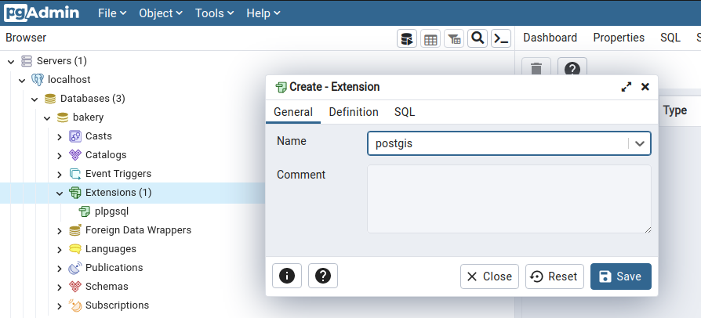
Extensions avec le client PSQL
$ psql -Upostgres -hlocalhost -dbakery
postgres=# CREATE DATABASE databasename;
postgres=# \connect databasename;
databasename=# CREATE EXTENSION postgis;
databasename=# CREATE EXTENSION uuid-ossp;
Si ce n’est pas déjà installé…
Installation de PostGIS
Windows
Là, selon la version de PostgreSQL, trouver postgis-bundle-pg14x64-setup-3.3.2-2.exe, le télécharger et l’installer.
Mac
Utiliser de préférence posgres.app (PostGIS y est déjà inclus) https://postgresapp.com/de/downloads.html
Linux
sudo apt install postgis
OPENGIS.ch PostgreSQL
.| Hôte | modelbaker-workshop-exoscale-d9c1bf3f-51a3-4ab8-afac-6cb37d8a8f.a.aivencloud.com |
| Port | 21699 |
| Utilisateur | testbaker |
| Mot de passe | superbaker |
| BD | gis |
(actif uniquement aujourd’hui)
Utilisez toujours votre abréviation de nom comme préfixe pour les schémas :
sigdav_ (pour David Signer)
Java
Avez-vous Java installé?
java --version
… il y a une réponse, alors c’est bien 🙂
Téléchargement pour Windows / Mac
Ou sous Linux (openJDK)
sudo apt-get install openjdk-18-jre
ou
sudo apt install default-jre
Téléchargement des données de démonstration
Données utilisateur
https://geodienste.ch/?locale=fr
- Kataster der belasteten Standorte (Cadastre des sites pollués)
- Spécification
- Version 1.5
- AtomFeed + Service de téléchargement OpenSearch
- Téléchargement de SH et TG
QGIS Model Baker
- Installer Model Baker
- Installer Swiss Locator
Prêt à démarrer 🚀
Commençons…
Intermède
… laissons-nous divaguer
Intermède 1 : Méta-attributs
Que sont les méta-attributs ?
Les méta-attributs permettent de compléter les modèles INTERLIS avec des informations supplémentaires qui ne sont pas prévues dans la spécification actuelle d’INTERLIS.
Exemple avec Model Baker (1)
Expression d’affichage spécifique pour la table de la classe ZustaendigkeitsKataster.
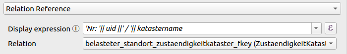
Syntaxe dans le modèle INTERLIS
!!@<name>=<value>
Suivi de l’élément référencé (MODEL, TOPIC, CLASS, etc.)
Méta-attributs vs Commentaire
Un commentaire commence par !! et se termine par une fin de ligne.
Un méta-attribut commence également par !! mais suivi de @
Exemple avec Model Baker (2)
Méta-attribut spécifique de Model Baker :
!!@qgis.modelbaker.dispExpression='<QGIS Expression>'
Exemple avec Model Baker (3)
Définition dans le modèle KbS_V1_5
MODEL KbS_V1_5 (de) =
TOPIC Belastete_Standorte =
!!@qgis.modelbaker.dispExpression = "'Nr: '|| uid ||' / '|| katastername"
CLASS ZustaendigkeitKataster =
[...]
Listes de méta-attributs
- Compilateur INTERLIS (ili2c)
- ili2db
- Validateur INTERLIS (ilivalidator)
- Gestionnaire INTERLIS (ilimanager)
- QGIS Model Baker
(incomplet) Voir aussi https://interlis.discourse.group/t/uebersicht-interlis-meta-attribute/70
Les méta-attributs dans le modèle sont formidables
Mais nous ne pouvons pas simplement bricoler le modèle !
Fichier de méta-attributs supplémentaire
… connu comme “fichier de configuration”, “fichier de méta-attributs”, “fichier INI”, “fichier TOML”…
En réalité au format INI, mais généralement enregistré sous .toml.
À ne pas confondre avec le fichier de méta-configuration pour “contrôler” ili2db (également en relation avec UsabILIty Hub).
Exemple avec Model Baker
Définition dans le fichier de configuration pour KbS_V1_5
["KbS_V1_5.Belastete_Standorte.ZustaendigkeitKataster"]
qgis.modelbaker.dispExpression = "'Nr: '|| uid ||' / '||katastername"
Contrôler les validations avec des méta-attributs
Juste pour information…
["KbS_V1_5.Standorte.Belasteter_Standort.Nr"]
# disable mandatory constraint of Katasternummer
multiplicity="off"
["KbS_V1_5.Standorte.Belasteter_Standort.Constraint1"]
msg = "Mind. eine Untersuchungsmassnahme erfassen."
De quoi avons-nous besoin pour KbS_V1_5 ?
-
Multi-géométrie construite à partir de
STRUCTURE MultiPolygon -
“Multilinguisme aplati” sur
STRUCTURE MultilingualUri
L’attribut de mapping
ili2db.mapping
- Sur la classe ou la structure
Les structures sont mappées avec des colonnes au lieu de relations (par exemple, la multi-géométrie).
- Sur l’attribut
Les attributs de structure (BAG OF/LIST OF) sont mappés avec un type de données au lieu de relations.
Définition dans le modèle INTERLIS
!!@ili2db.mapping=MultiSurface
STRUCTURE MultiPolygon =
Polygones: BAG {1..*} OF PolygonStructure;
END MultiPolygon;
!!@ili2db.mapping=Multilingual
STRUCTURE MultilingualUri =
LocalisedText : BAG {1..*} OF LocalisedUri;
UNIQUE (LOCAL) LocalisedText: Language;
END MultilingualUri;
Définition dans le fichier de méta-attributs supplémentaire
[KbS_V1_5.Belastete_Standorte.MultiPolygon]
ili2db.mapping = "MultiSurface"
[KbS_V1_5.Belastete_Standorte.MultilingualUri]
ili2db.mapping = "Multilingual"
Prêt pour l’exercice 1 🚀
Intermède 2.1 : Héritages dans INTERLIS
Cas d’utilisation : Travailler avec KbS_V1_5
Cas d’utilisation : Travailler avec une extension
Exemple plus simple Gebaeudeinventar_V1
MODEL Gebaeudeinventar_V1 (de)
AT "mailto:signedav@localhost"
VERSION "2023-01-19" =
IMPORTS GeometryCHLV95_V1;
TOPIC Gebaeude =
CLASS Gebaeude =
EGID : MANDATORY TEXT*16;
Koordinaten : MANDATORY GeometryCHLV95_V1.Coord2;
END Gebaeude;
CLASS Adresse =
Strasse : TEXT*200;
Ort : MANDATORY TEXT*200;
END Adresse;
ASSOCIATION AdresseGebaeude =
GebaeudeAdresse -- {1..*} Adresse;
Gebaeude -- {1} Gebaeude;
END AdresseGebaeude;
END Gebaeude;
END Gebaeudeinventar_V1.
Nous avons besoin de “plus”
Nous devons utiliser un attribut supplémentaire pour un projet écologique : EntsprichtStandard
Mais nous souhaitons toujours renvoyer les données sous forme de Gebaeudeinventar_V1.
Cas d’utilisation : Projet écologique
Comment “héritons-nous” ?
Étendre une classe (classe de base) en une dérivation “améliorée”.
Une classe étendue (dérivation) a toutes les propriétés de la classe de base + “plus”.
“plus” signifie des attributs ou des restrictions supplémentaires.
De Gebaeude devient un meilleur Gebaeude
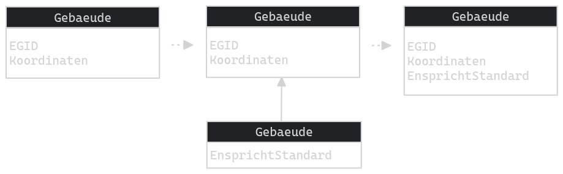
La dérivation en INTERLIS (1)
… avec EXTENDED
CLASS Gebaeude =
EGID : MANDATORY TEXT*16;
Koordinaten : MANDATORY GeometryCHLV95_V1.Coord2;
END Gebaeude;
CLASS Gebaeude (EXTENDED) =
EntsprichtStandard: BOOLEAN;
END Gebaeude;
Et voilà, nous l’avons !
Vérifiez !
Mais il y a encore plus
Nous voulons maintenant saisir plusieurs types de bâtiments :
- Bâtiments résidentiels (avec
Anzahl_Wohnungen) - Bâtiments commerciaux (avec
Anzahl_Firmen) - Bâtiments commerciaux publics (avec
Anzahl_FirmenetZweck)
… et tout renvoyer finalement comme Gebaeude.
La dérivation en INTERLIS (partie 2)
… avec EXTENDS
CLASS Gebaeude =
EGID : MANDATORY TEXT*16;
Koordinaten : MANDATORY GeometryCHLV95_V1.Coord2;
END Gebaeude;
CLASS Gewerbegebaeude
EXTENDS Gebaeude =
Anzahl_Firmen : MANDATORY 1 .. 100;
END Gewerbegebaeude;
Exemple de modèle MultiGebaeudeinventar_V1

Les classes en INTERLIS
MODEL Gebaeudeinventar_V1 (de) =
TOPIC Gebaeude =
CLASS Gebaeude =
EGID : MANDATORY TEXT*16;
Koordinaten : MANDATORY GeometryCHLV95_V1.Coord2;
END Gebaeude;
CLASS Adresse =
Strasse : TEXT*200;
Ort : MANDATORY TEXT*200;
END Adresse;
ASSOCIATION AdresseGebaeude =
GebaeudeAdresse -- {1..*} Adresse;
Gebaeude -- {1} Gebaeude;
END AdresseGebaeude;
END Gebaeude;
END Gebaeudeinventar_V1.
MODEL MultiGebaeudeinventar_V1 (de) =
IMPORTS Gebaeudeinventar_V1;
TOPIC Gebaeude EXTENDS Gebaeudeinventar_V1.Gebaeude=
!! First inheritance
CLASS Wohngebaeude
EXTENDS Gebaeude =
Anzahl_Wohnungen : MANDATORY 1 .. 1000;
END Wohngebaeude;
!! Second inheritance
CLASS Gewerbegebaeude
EXTENDS Gebaeude =
Anzahl_Firmen : MANDATORY 1 .. 100;
END Gewerbegebaeude;
!! Inheritance of first inheritance
CLASS Oeffentliches_GewerbeGebaude
EXTENDS Gewerbegebaeude =
Zweck : MANDATORY TEXT*255;
END Oeffentliches_GewerbeGebaude;
END Gebaeude;
END MultiGebaeudeinventar_V1.
Prêt pour l’exercice 2 🚀
Intermède 2.2 : Représentation physique des héritages
D’abord
Essayez avec Smart2 et si ça ne va pas, essayez avec Smart1.
Citation : Romedi Filli - 2022
Stratégies de mapping d’héritage
- New Class
- Super Class
- Sub Class
- New+Sub Class
Exemple de modèle
New Class
Gebaeude.t_type : (
Wohngebaeude,
Gewerbegebaeude,
Oeffentliches_
Gewerbegebaeude
)
- Les extensions sont mappées avec des relations.
- La condition NON NUL est respectée.
- Plusieurs importations sont nécessaires par objet.
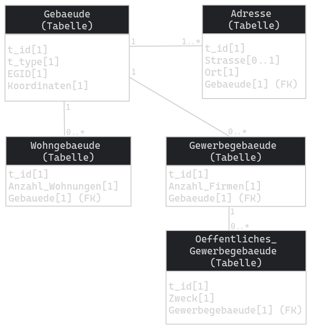
Exemple de modèle
Super Class
Oeffentliches_
Gewerbegebaeude.t_type: (
Gewerbegebaeude,
Oeffentliches_
Gewerbegebaeude
)
- Moins de tables et de relations (facile à utiliser)
- La condition NOT NULL n’est pas respectée
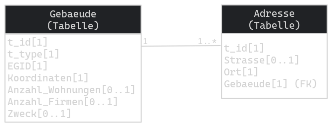
Exemple de modèle
Sub Class
Oeffentliches_
Gewerbegebaeude.t_type: (
Gewerbegebaeude,
Oeffentliches_
Gewerbegebaeude
)
- La condition NON NUL n’est pas respectée.
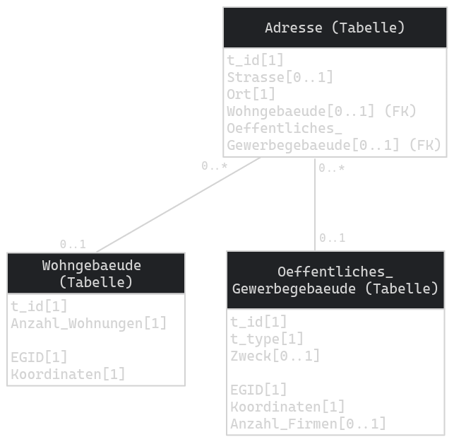
Exemple de modèle
New+Sub Class
- Pas de types
- À mon avis, la procédure attendue
- La condition NOT NULL est respectée
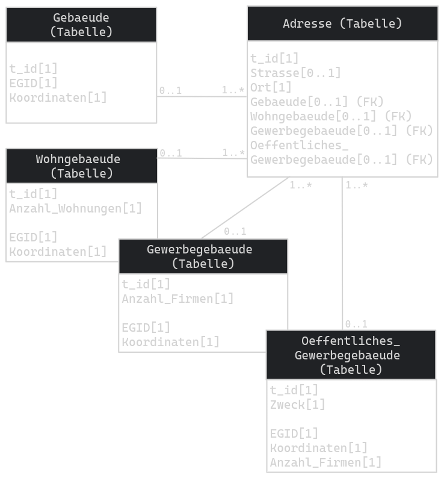
Smart Mapping dans ili2db
noSmartMapping
- Toutes les classes sont mappées avec la stratégie New Class.
noSmartMapping
Résulte en ce que nous voyons dans le graphique New Class.
smart1Inheritance
- Classes abstraites sans relations -> stratégie Super Class
- Classes abstraites avec relations et sans super classe concrète -> stratégie New Class
- Classes concrètes sans super classe concrète -> stratégie New Class
- Toutes les autres classes -> stratégie Super class
smart1Inheritance
Signifie donc que Gebaeude utilise la stratégie New Class et toutes les autres la stratégie Super class.
Résulte en ce que nous voyons dans le graphique Super class.
smart2Inheritance
- Classes abstraites -> stratégie Super Class
- Toutes les classes concrètes -> stratégie New+Sub Class
smart2Inheritance
Signifie donc que toutes utilisent la stratégie New+Sub Class.
Résulte en ce que nous voyons dans le graphique New+Sub Class.
En résumé
- smart 1 ↗️
- smart 2 ↘️
Il est temps de faire l’exercice 2.1 ? 🚀
Intermède 2.3 : Optimisation de projet avec Smart2
Créons un projet sans optimisation
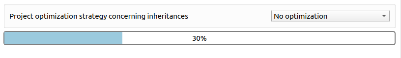
… essayons avec OekoGebaeudeinventar_V1 (ou aussi ZG_Nutzungsplanung_V1_1)
Problématique
Si un modèle ou un topic contient des classes étendues, celles-ci sont implémentées dans la base de données physique, y compris les classes de base…
… et par conséquent, des couches sont créées dans QGIS.
Pouvons-nous simplement ignorer les classes de base ?
Mais quelles couches voulons-nous voir ?
- Les classes de base avec des extensions du même nom sont non pertinentes
- Les classes de base avec plusieurs extensions sont non pertinentes
- Sauf si l’extension est dans le même modèle, elles ne sont pas non pertinentes
Stratégies
- Masquer les classes de base non pertinentes
- Grouper les classes de base non pertinentes
- Aucune : les couches sont renommées pour être uniques
Vérifiez !
Prêt pour le dîner 🍲
Intermède 3 : Conteneurs et ensembles de données
Ensembles de données (datasets)
- Ensembles de données d’un domaine spatial ou thématique spécifique
- Indépendant du modèle (contrairement au topic)
- Les données d’un ensemble de données peuvent être gérées, validées et exportées indépendamment des autres données.
conteneurs (baskets)
- Une instance plus petite
- Alors que les ensembles de données couvrent généralement l’ensemble du modèle, les conteneurs font généralement partie d’un topic
- Le plus souvent, ils sont l’intersection du topic et de l’ensemble de données
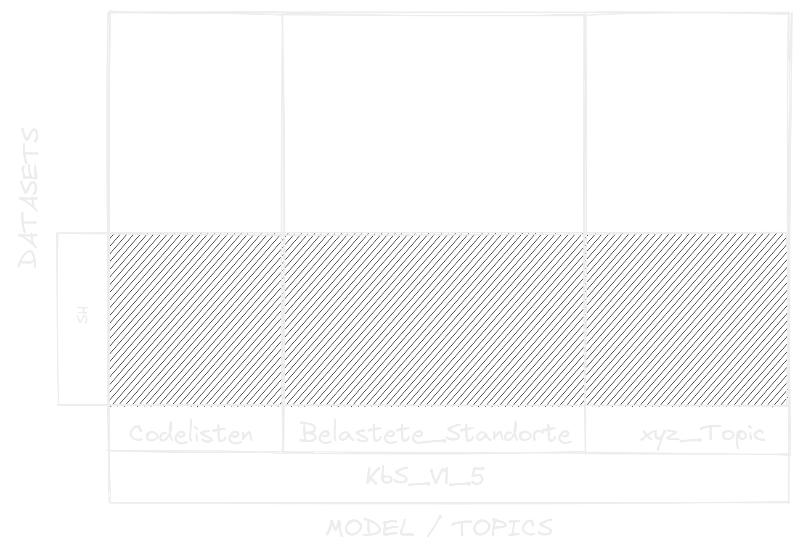
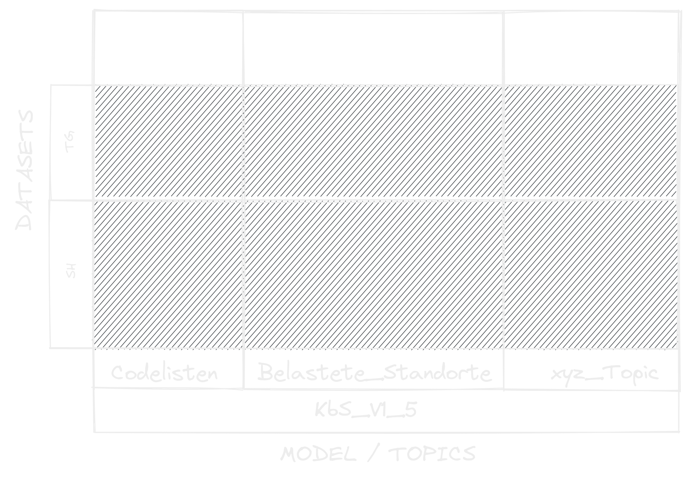
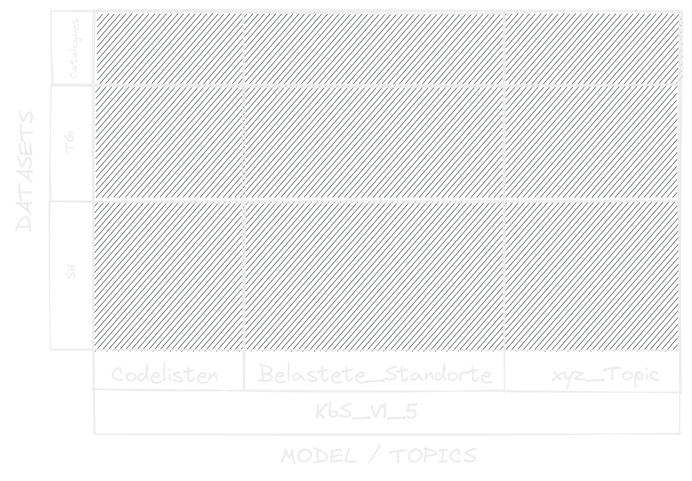
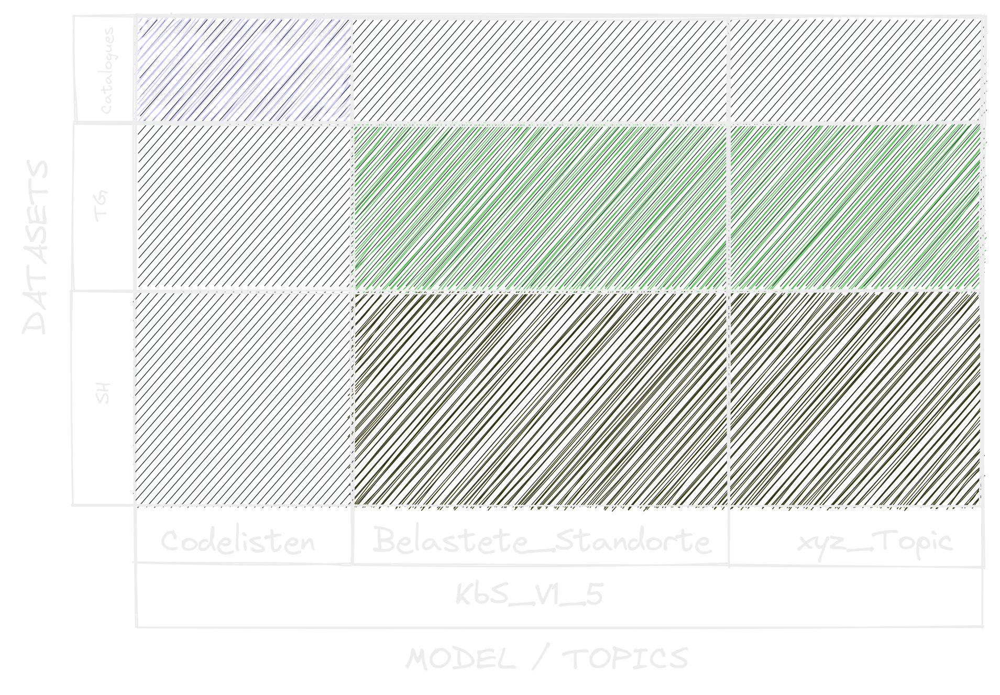
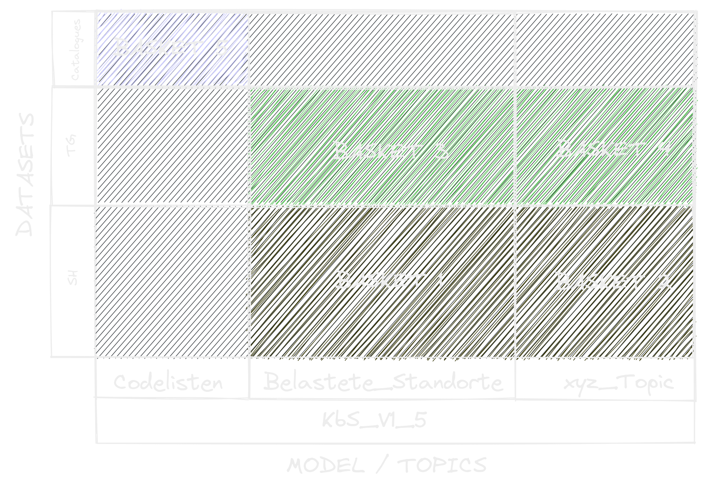
Prêt à démarrer 🚀
Intermède 4 : Que sont les OID ?
OID
Les identifiants d’objet (OID) sont des chaînes de caractères uniques à travers les systèmes qui identifient un objet INTERLIS.
Pour échanger et mettre à jour des objets sans conflit à travers différents endroits.
TID
Dans le fichier de transfert, l’OID est visible sous TID.
<City_V1.Constructions.Buildings TID="chMBAKER00000100">
<Street>Rue des Fleures</Street><Number>1</Number>
</City_V1.Constructions.Buildings>
Pourquoi TID et pas OID ?
- Un OID dans un XTF est un TID
- Un TID dans un XTF n’est pas toujours un OID
Car il n’est pas obligatoire de travailler avec des OID. Un fichier XTF a besoin de TID pour les références, etc.
Si vous n’utilisez pas d’OID, les TID sont simplement des nombres ou des caractères quelconques (pas de stabilité à travers les systèmes garantie !)
Et dans le schéma de base de données physique ?
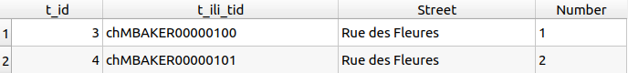
t_id vs. t_ili_tid
- Le
t_ili_tidcorrespond au TID dans le XTF et donc à l’OID (si des OID sont utilisés) - Le
t_idn’est qu’un numéro de séquence interne au système
Quand le t_id devient-il TID et le TID devient-il t_ili_tid ?
- Si le
t_ili_tidreste vide, alors lors d’une exportation, let_idest écrit dans le TID. - Lors de l’importation, le TID est alors écrit dans le
t_ili_tid.
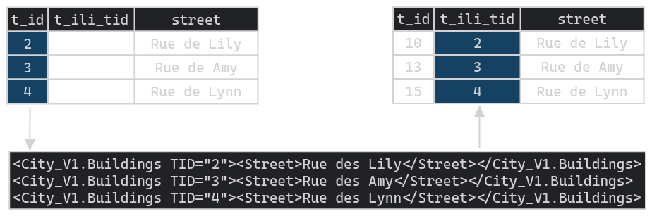
Quand dois-je utiliser des OID ?
- Dès que plusieurs endroits collectent et gèrent des données
- Si le modèle le requiert :
[...] TOPIC Constructions = BASKET OID AS INTERLIS.UUIDOID; OID AS INTERLIS.STANDARDOID; [...]
Types d’OID
- UUIDOID
- I32OID
- STANDARDOID
- ANYOID
- OID défini par l’utilisateur
UUIDOID
OID TEXT*36- Identificateur Unique Universellement
Valeur par défaut Model Baker
uuid('WithoutBraces')
I32OID
OID 0 ... 2147483647
Valeur par défaut Model Baker
t_id
STANDARDOID
OID TEXT*16- Préfixe (2 + 6 caractères)
Identifiant du pays + une partie d’identifications globale.
- Postfix (8 caractères)
Séquence (numérique ou alphanumérique) du système comme partie d’identifications locale.
Valeur par défaut Model Baker
'%change%' || lpad( T_Id, 8, 0 )
ANYOID
Ne définis pas de format pour l’OID, mais seulement qu’un OID doit être défini dans tous les modèles Symbolisations étendus.
OID non définis
Les règles du type XML-ID (www.w3.org/TR/REC-xml) s’appliquent
- le premier caractère doit être une lettre ou un souligné
- suivi de lettres, chiffres, points, tirets, soulignés - rien d’autre.
Valeur par défaut dans Model Baker
'_' || uuid('WithoutBraces')
La même chose s’applique aux OID définis par l’utilisateur.
Gestionnaire d’OID
Base de données > Model Baker > Gestionnaire d’OID
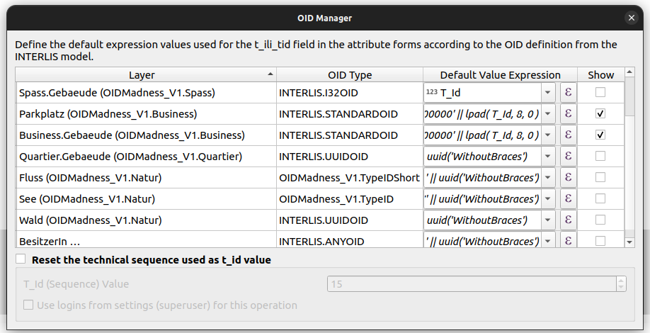
Vérifiez !
Intermède 5 : UsabILIty Hub
À quoi sert UsabILIty Hub ?
-
Obtenir des informations supplémentaires sur les modèles INTERLIS et leurs projets (QGIS) automatiquement via le web.
-
Configurations supplémentaires faites une seule fois et utilisées plusieurs fois.
Comment fonctionne UsabILIty Hub ?
1. L’utilisateur sélectionne le modèle
-
Recherche inter-référentiels de fichiers de méta-configuration.
-
Trouver les fichiers de méta-configuration dans les
ilidata.xmlsur UsabILItyHub (https://models.opengis.ch) ou les référentiels propres.
2. Le fichier de méta-configuration est analysé
Les configurations pour ili2db, Model Baker et d’autres outils y sont définies.
Également des liens (Ids) vers :
- Catalogues
- Fichier de méta-attributs supplémentaire
- Fichiers de surcouche
3. Les configurations sont définies
- ili2db : Smart-Mapping, gestion des conteneurs, etc.
4. Les liens sont résolus
- Recherche inter-référentiels des catalogues, fichier de méta-attributs supplémentaire et fichiers de surcouche
Les fichiers de surcouche contiennent des informations sur :
- Symbologies et configurations de formulaires
- Disposition des légendes et ordre des couches
- Thèmes de carte, mises en page d’impression
- etc.
5. Utilisation des informations
- Exécuter ili2db en utilisant les configurations et le fichier de méta-attributs supplémentaire
- Importer les catalogues trouvés
- Générer le projet en utilisant les fichiers de surcouche
Déroulement
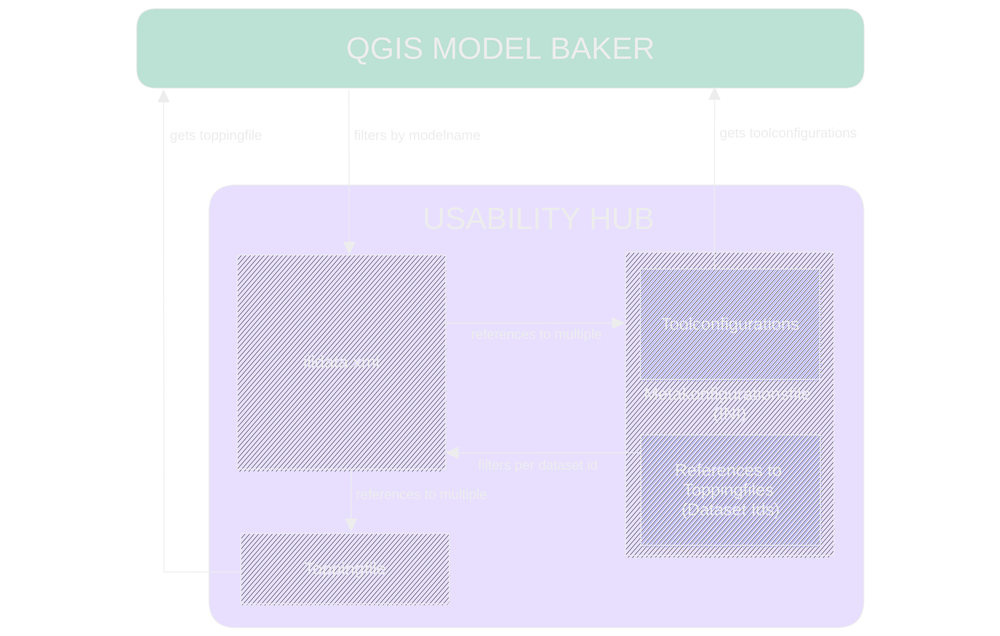
Documentation
Prêt à démarrer 🚀
Intermède 6 : Modèles de traduction
Que sont les modèles de traduction ?
Les modèles de traduction sont des modèles traduits qui ne diffèrent pas du modèle original en termes de structure.
Exemple Gebaeudeinventar_V1
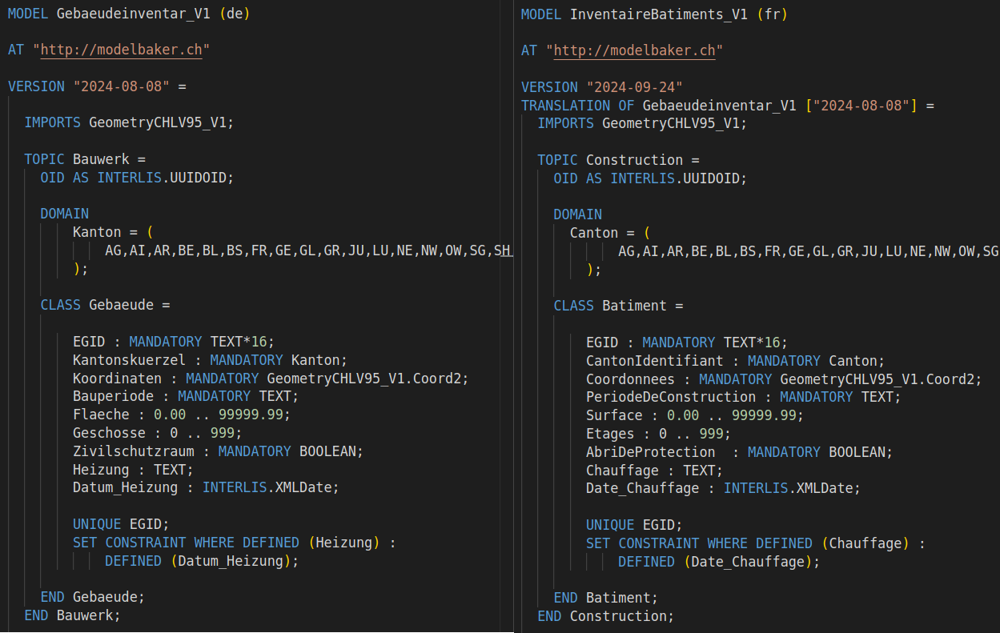
Prêt à démarrer 🚀
Exemple Plans d’affectation
Fr : https://models.geo.admin.ch/ARE/PlansDAffectation_V1_2.ili
De : https://models.geo.admin.ch/ARE/Nutzungsplanung_V1_2.ili
Prêt à démarrer 🚀
Exercices
… la pratique rend parfait
Exercice 1 : Créer un projet utilisable
- Créer un projet pour
KbS_V1_5incluant un fichier de méta-attributs supplémentaire - Ajouter une carte de fond
- Enregistrer le projet
Exercice 2 : Smart Inheritance Mapping
- Importer le modèle
MultiGebaeudeinventar_V1avec Smart1Inheritance - Renommer les couches en
<nom de la couche>_Smart1 - Importer le modèle
MultiGebaeudeinventar_V1avec Smart2Inheritance
Ne pas utiliser d’optimisation :
Exercice 2.1 : Optimisation du projet
- Importer le modèle
OekoGebaeudeinventar_V1avec Smart2Inheritance - Importer le modèle
ZG_Nutzungsplanung_V1_1avec Smart2Inheritance
Ne pas utiliser d’optimisation :
Exercice 3 : Saisie dans les ensembles de données
- Créer le projet avec des ensembles de données pour TG et SH (si ce n’est pas déjà fait)
- Ajouter une zone à Stein am Rhein TG.
- Saisir une zone dans SH.
- Créer un nouvel ensemble de données pour ZH.
- Saisir une zone dans ZH.
Exercice 4 : Exportation
- Exporter toutes les données dans un fichier de transfert (y compris les listes de codes)
- Exporter uniquement les données utilisateur de SH dans un fichier de transfert
Tâche supplémentaire
- Créer un projet pour
OekoGebaeudeinventar_V1avec Smart2 et l’optimisation de masquage - Saisir un objet
- Exporter pour
OekoGebaeudeinventar_V1et pourGebaeudeinventar_V1
Exercice 5 : UsabILItyHub
- Configurer un projet quelconque
- Exporter les surcouches
- Importer le modèle avec les surcouches du référentiel local
PAUSE
Un groupe de différents intéressés…
Model Baker Group
Équipe de projet
par ordre d’apparition
- Romedi Filli, Canton SH (direction)
- Manuel Kaufmann, Agroscope
- David Signer, OPENGIS.ch
- Pascal Megert, Canton AI
- Marleen Schulze, Canton SZ
- Adrian Weber, Canton SO
Financement
Contribution annuelle avec des niveaux
(à partir du parrain avec heures de support incluses) :
- Visionnaire
- Parrain
- Soutien
- Donateur
Par projet
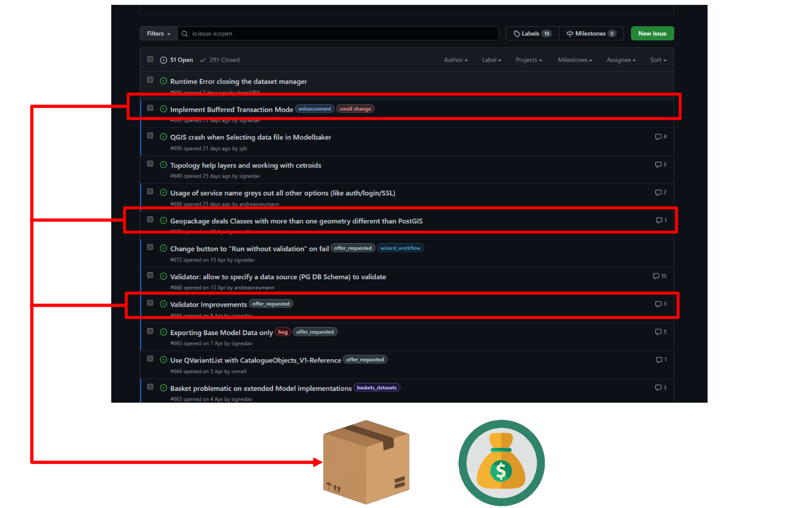